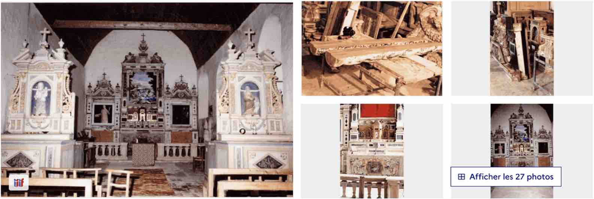

Informations

Édifice de conservation
Titre courant
Prieuré Notre-Dame-du-Repos
Référence Mérimée
PA00079952 voir sur POP
Identifiant AgrÉgée
SDISAX
Commune
Médavy
Adresse
Non renseigné
Emplacement de l’objet
chevet
Informations de l’objet
Titre courant
maître-autel
Référence Palissy
PM61000888 voir sur POP
Identifiant AgrÉgée
WDIVHR
Nature de la protection
Inscrit
Numéro d’inventaire
1234567890
Interventions antérieures
Non-renseigné
Ensemble patrimonial
Dépliez les unités patrimoniales pour parcourir la hiérarchie et accéder aux fiches.
Le nombre de constats existants est indiqué par UP.
-
- maître-autel